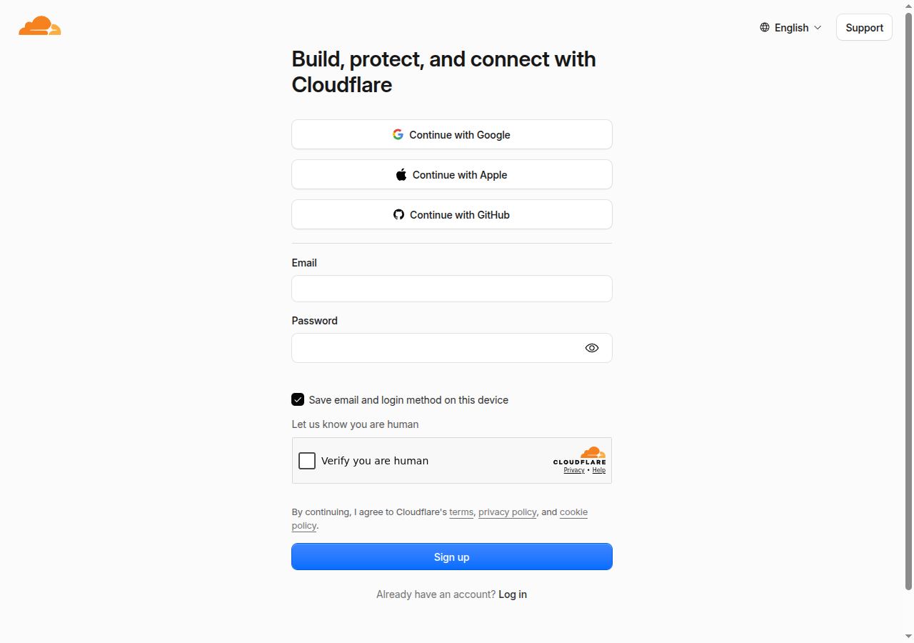

Everything you need to put your new site online, on hosting you own outright — and to stop paying a monthly subscription for a website you already own.
This guide takes you from nothing to a live website on hosting that belongs to you. When you finish, three things are true: your website is yours, the hosting account is in your name, and you have no website subscription to pay.
Most café websites cost their owner a monthly fee forever, for a site that was built once and rarely changes. That is what we are ending here. Come back to us whenever you want changes made — we would like you to, and we would rather earn it than lock you in.
Most of that is waiting. The clicking is perhaps fifteen minutes.
oudkempeneetcafe.nl from.
Your domain is registered through Key-Systems, possibly via a reseller you
bought it from. You need to be able to sign in there for Step 4.Your email will not be affected. We checked: there is no email attached to this domain — your Gmail address is entirely separate and nothing in this guide touches it. Your Google Maps listing and your reviews are also unaffected.
Cloudflare is the company that will host your website. The plan we are using is free, and it stays free at the size of a café website.
In your browser, go to:
dash.cloudflare.com/sign-up
Type your email address and choose a password. Tick “Verify you are human”, then click the blue Sign up button.
Ignore the “Continue with Google / Apple / GitHub” buttons at the top — using a plain email address keeps this account simple and independent.
Cloudflare sends you an email with a confirmation link. Open it and click the link. If it has not arrived after a minute, check your spam folder.
Cloudflare will ask you to set up two-factor authentication — a six-digit code from your phone that you enter when logging in. Follow its instructions using an app such as Google Authenticator or your phone's built-in password manager.
When it offers you recovery codes — a list of one-time backup codes — print them, or write them on paper, and keep them somewhere safe in the café (with your business papers, not in your email).
If you ever lose your phone and you do not have these codes, nobody can get you back into your account — not Cloudflare's support, and not us. Your website would keep running, but no one could change it again. Two minutes with a pen now removes that risk permanently.
In the menu on the left of the Cloudflare dashboard, click Workers & Pages.
Give the project this name, exactly:
oudkempeneet-cafeThen drag the website folder we sent you into the upload area, and click Deploy site. It takes under a minute.
Cloudflare gives you a temporary address ending in .pages.dev. Click it. Your new
website should appear.
This is your site, already online. It is not yet at your own address — that is the next two steps.
Go to the account home (click the Cloudflare logo, top left), then click
Add a domain — sometimes shown as “Add site”. Type your domain, without
www:
You will be shown a list of plans. Scroll down and choose Free. Cloudflare will then look at your current settings and copy them across automatically.
You will see a list of DNS records it found. You do not need to understand them. Just confirm one line is present — a TXT record containing:
v=spf1 -allIf it is there, click Continue. If it is missing, add it before continuing, or call us.
Cloudflare now shows you two addresses that look like
anna.ns.cloudflare.com and rick.ns.cloudflare.com. Every account gets a
different pair, so yours will have different names.
Write both of them down. You need them in the next step.
This is the only step that happens outside Cloudflare, and it is the one that actually moves your
website address. Sign in to the company you bought oudkempeneetcafe.nl from
(Key-Systems, or the reseller you bought through).
Find the setting called Nameservers, DNS servers, or NS records. You will see these four values:
| Remove these four (your current ones) |
|---|
ns-cloud-e1.googledomains.com |
ns-cloud-e2.googledomains.com |
ns-cloud-e3.googledomains.com |
ns-cloud-e4.googledomains.com |
Replace them with the two Cloudflare addresses you wrote down in Step 3.4, and save.
Those four Google addresses above are your way back. If anything ever goes wrong, putting them back exactly as they were returns your site to how it is today, usually within the hour. That is why we do not cancel Squarespace until the very end.
If you cannot find the nameserver setting, take a screenshot of what you can see and send it to us — we will point at the exact box. Do not guess: changing the wrong field usually does nothing, which is confusing but harmless.
Back in Cloudflare: Workers & Pages → click your oudkempeneet-cafe project → the Custom domains tab → Set up a custom domain.
Add each of these, one at a time:
oudkempeneetcafe.nl www.oudkempeneetcafe.nlCloudflare handles the security certificate — the padlock in the browser — by itself. It is usually ready within minutes and occasionally takes a few hours.
Wait until the nameserver change has spread — usually under an hour. Then check all of this:
https://oudkempeneetcafe.nl shows your new site, with a padlockhttps://www.oudkempeneetcafe.nl does the sameTell us when you have checked these. We check from our side too, before you do anything in Step 7.
Only once Step 6 is fully working:
Your domain is registered at Key-Systems, not at Squarespace. Cancelling their subscription cannot take your domain name with it. That is the one genuinely serious risk in a move like this, and your setup does not have it.
When you want changes — a new menu, seasonal hours, new photos — ask us. We will make them and email you a new folder. Then:
That is the whole process, and it is yours to run. Nothing obliges you to come back to us — we would simply like you to, on the strength of the work.
| What you see | What to do |
|---|---|
| Site not loading, an hour after Step 4 | Usually the change still spreading. Give it a few more hours before doing anything. |
| A security or certificate warning | Normal in the first hours while the padlock is issued. It resolves itself. |
| The old Squarespace site still appears | Your browser is remembering it. Try a private window, or your phone on mobile data. |
| Something is genuinely broken | Call us before changing anything back. If you want to revert yourself, restore the four Google nameservers from Step 4. |
| What | Yours |
|---|---|
| Cloudflare email address | |
| Where the recovery codes are kept | |
| Your two Cloudflare nameservers | |
| Domain registrar login (which company) | |
| Date Squarespace was cancelled |